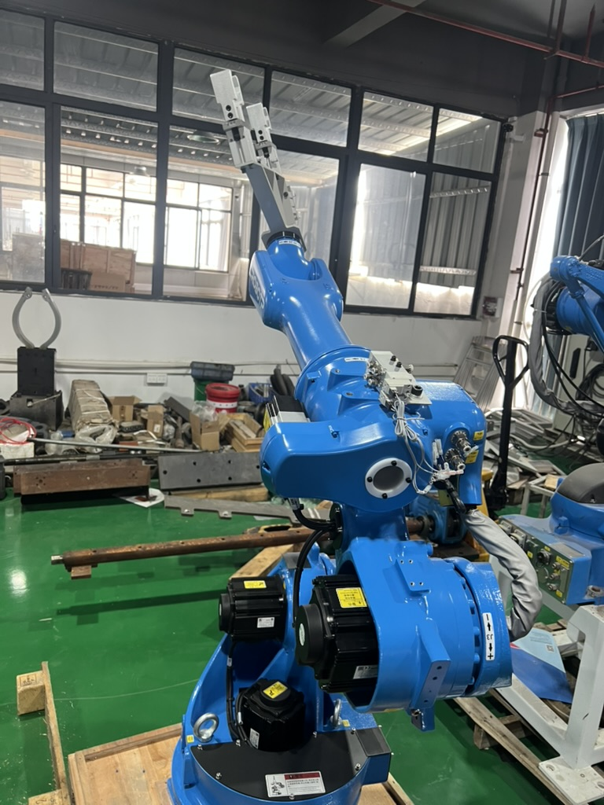

Taotao business-visit photo for robot-cell context. It does not prove a particular supplier, cell or safety claim.
An overseas manufacturer requests a robot to load parts into a machine. The Chinese supplier's quotation names an arm, gripper and controller. The buyer must decide whether to pay a deposit. A successful arm demonstration would still leave a practical question: who delivers and accepts the whole operating cell?
Why the boundary matters
OSHA's robotics guidance treats installation, integration and risk assessment as system-level work. For a U.S. workplace, a machine-tending application must be assessed in its actual operating setting. Other countries have their own applicable rules. A robot model or supplier brochure alone cannot tell the buyer whether guarding, access, emergency stops and interactions with the host machine are covered in the quoted scope.
Taotao's quote-to-cell scope check
| Request before deposit | Match against | Decision question |
|---|---|---|
| Named system integrator and responsibility split | Quotation, contract and project schedule | Who owns interfaces between the robot, gripper and existing machine? |
| Proposed cell layout and operating sequence | Factory floor measurements and part flow | What happens during loading, fault recovery and maintenance access? |
| Application-specific risk assessment and safeguarding plan | Actual cell design and destination rules | Which hazards and controls are accounted for? |
| Factory and site acceptance criteria | Purchase order and commissioning plan | What evidence releases each payment milestone? |
Ask for drawings and acceptance steps with revision numbers. Check that the robot model, end effector, machine interface and operating mode are consistent across the quote, design and proposed tests. If the host machine is not yet defined, mark its interface and final safety validation to be confirmed rather than assuming the integrator can price it accurately.
Red flags and limits
Pause if the offer says “complete automation” but names no integration owner, excludes guarding without stating it, or ties the final payment only to shipment of the arm. A factory demonstration is useful, but it does not establish safe operation at the buyer's site. The photograph here shows an industrial robot during a Taotao business visit; it is context, not proof of this quoted cell or its compliance.
Continue when scope, integrator, safeguards and acceptance evidence align. Pause when the quote leaves cell interfaces or safety responsibilities open. Escalate to the buyer's engineering and workplace-safety specialists when a required safeguard or destination rule is disputed. Taotao can help compare documents and observe the proposed process; a qualified integrator and the buyer's safety team must make the technical acceptance decision.
The robot application range is a starting point for defining requirements, not a claim that a photographed cell or any listed model is approved for a particular site.
One action: Send a redacted cell scope to Taotao Trading for an evidence-gap check before paying a deposit.